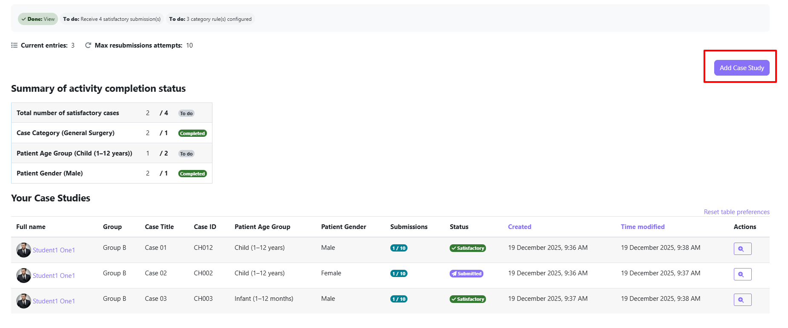
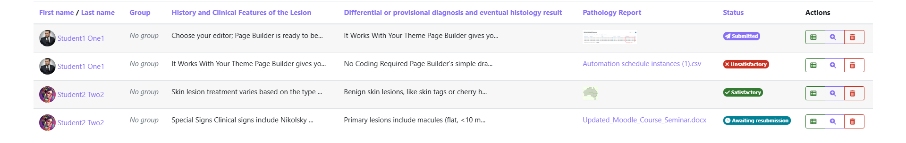
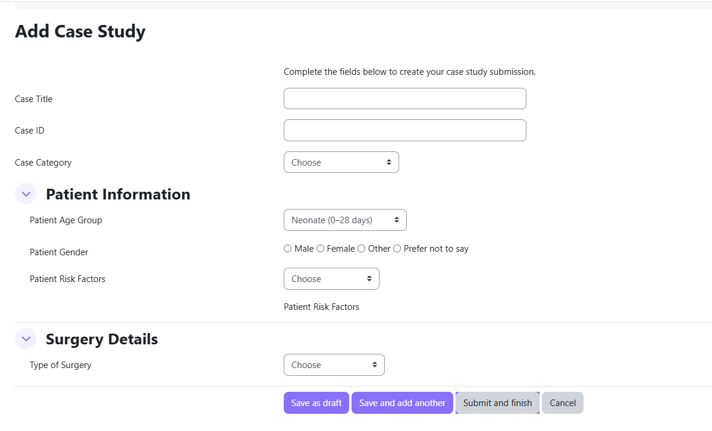
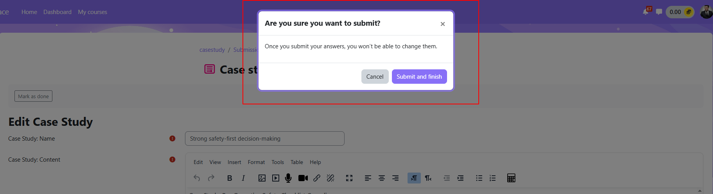

Student Guide
This guide explains how to create, edit, and submit your case study entries, view grader feedback, and resubmit if asked to revise your work.
Opening the activity
Click the Case Study activity link on your course page. The main page shows:
- Activity introduction / instructions from your teacher
- Deadline information (if set)
- Your existing submissions and their current status
- A button to create a new submission

Understanding submission statuses
| Status | What it means for you |
|---|---|
| Draft | You saved your work but haven't submitted yet. Only you can see it. You can still edit it. |
| Submitted | You clicked Finish and Submit. Your teacher can now see and grade it. You cannot edit it. |
| In Review | A grader has opened your submission and is currently marking it. |
| Awaiting Resubmission | The grader has asked you to revise and resubmit. Look for their feedback and create a new version. |
| Resubmitted | You submitted your revised version. It is awaiting grader review. |
| Satisfactory ✓ | Your submission has been accepted by the grader. |
| Unsatisfactory | Your submission did not meet the criteria. Check the grader's feedback. |

Creating a new submission
- Click New submission on the activity page.
- Fill in all the fields in the form. Required fields are marked with an asterisk (*).
- Choose one of the save options when you are ready.

Save options
| Button | What it does |
|---|---|
| Save as Draft | Saves your answers without submitting. You can return and edit later. Graders cannot see drafts. |
| Save and Add Another | Saves this submission and immediately opens a blank form for a new one. |
| Finish and Submit | Shows a confirmation dialog, then submits your work for grading. You cannot edit after submitting. |
| Cancel | Discards unsaved changes and returns to the activity page. |
The submission confirmation dialog
When you click Finish and Submit, a dialog appears:
"Please review your case study carefully. After submission, it cannot be edited. Are you sure you want to submit?"
Click Confirm to proceed, or Cancel to go back and review your answers.

Submission statement (if required)
If your teacher has enabled the submission statement, you must tick the following checkbox before you can submit:
"This case study submission is my own work, except where I have properly acknowledged the work of others."
You cannot click Finish and Submit without ticking this checkbox.
Editing a draft
You can edit your work freely while it has Draft status.
- Find the submission with Draft status on the activity page.
- Click Edit.
- Make your changes and save.
Resubmitting after feedback
If a grader changes your status to Awaiting Resubmission, you will receive a notification (if enabled) and a Resubmit button will appear.
- Return to the activity page and read the grader's feedback.
- Click Resubmit next to the relevant submission.
- If pre-fill is enabled by your teacher, your previous answers load automatically — edit and improve them.
- Click Finish and Submit when ready.
Viewing grader feedback
After your submission is graded, click the submission title or View to see:
- The outcome: Satisfactory or Unsatisfactory
- The grader's written feedback (if provided)
- The grade (if grading is enabled for this activity)
Deadlines
If your teacher set a due date, it is shown on the activity page:
- Before the deadline: Normal submission is allowed.
- After the deadline: A message appears — "This case study is no longer accepting submissions." — and the New Submission button is hidden.
If your teacher granted you a personal extension via User Overrides, your extended deadline applies instead — you will simply see that submissions are still open for you.